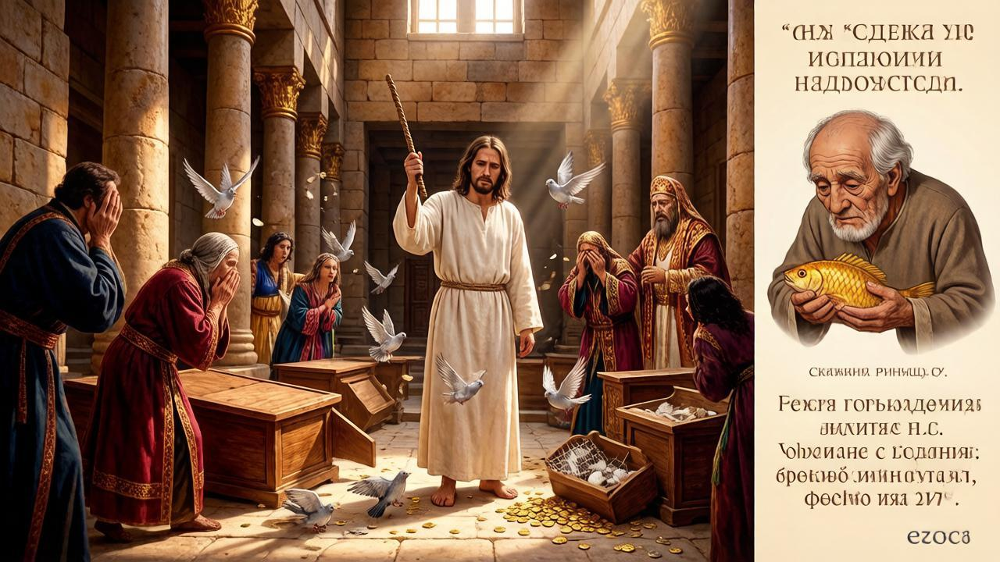
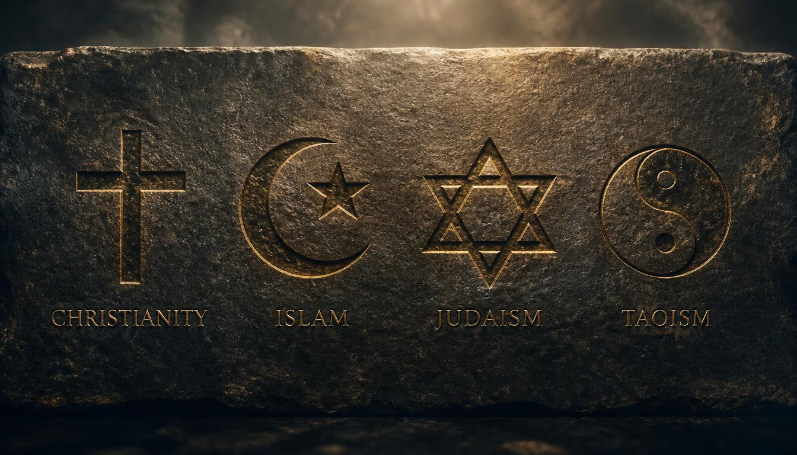

لماذا تشعر بالسوء؟ لا تتعجّل في الإجابة. أنا لا أسأل عن التعب بعد العمل، ولا عن المال الذي لا يكفي حتى الراتب، ولا عن الصحة التي تخذلنا أحيانًا. كل هذا مفهوم ومألوف لكل إنسان. أنا أسأل عن شيء آخر — عن ذلك الشعور الغامض والموجع الذي تطرده عنك في الصباح، حين تحدّق في السقف ولا تريد أن تنهض. لا اسم له، لكنه موجود. وأنت تعرف عمّا أتحدث.
ربما السبب أنك تفعل كل شيء على نحو صحيح، ومع ذلك لا نتيجة. تعمل، وتدفع الضرائب، وتحترم القوانين، وتصوّت في الانتخابات — ومع ذلك تشعر أن لا شيء يعتمد عليك. أن القرارات التي تحدّد حياتك تُتخذ في مكان ما هناك، بدونك وليس من أجلك. الأمر أشبه بأنك تلعب لعبة كتب قواعدها آخرون، وتركوا لك دور الكومبارس. أن تُومئ برأسك، وأن تصفّق، ثم تعود إلى البيت. وهكذا في حلقة مفرغة.
وربما السبب أنهم يعدونك ثم ينسون. كل بضع سنوات يأتي أناس بكلمات جميلة، يطلبون ثقتك، يحصلون على صوتك — ثم يختفون. لا يعودون إلا قبل الانتخابات التالية، بوعود جديدة. لم تعد تصدّقهم، ومع ذلك تذهب، لأن البديل — ألّا تذهب على الإطلاق — أسوأ. فتعيش بين خيبة الأمل والعادة. وهذا أيضًا ليس جوابًا على سؤال: لماذا تشعر بالسوء.
وربما السبب أنك تشعر بأن مساحة الحرية تنكمش. لا بشكل حادّ ولا فجّ، بل بنعومة ودون أن تلاحظ. أولًا ألغوا النقد في مكان، ثم في مكان آخر. ثم قالوا إن المحفظة الرقمية أكثر راحة. ثم شرحوا أن بعض المشتريات يجب أن تُقيَّد — من أجل سلامتك. لم تلاحظ كيف وجدت نفسك في نظام يترك فيه كل خطوة أثرًا، ولا سبيل للخروج منه. الطوق لا يُلبَس بالقوة — بل يُقدَّم كهدية.
أو ربما السبب أنك وحدك. لا بمعنى العزلة الجسدية — حولك ناس، وعائلة، وزملاء. بل بمعنى غياب جماعة يكون فيها لصوتك معنى، ويُسمعك فيها أحد، وتكون فيها إنسانًا لا وظيفة. تعلّمنا أن نكون معًا، ثم نسيناه. وتعلّمنا أن نكون جمهورًا. ننظر، ونمرّر الشاشة، ونضع الإعجاب، ونشتري. لكن لا نقرّر. ولا نؤثّر. ولا نبني شيئًا مشتركًا. ومن هذا ينمو في الداخل فراغ لا شيء يملؤه، مهما دسّ النظام تحت أنفك من ترفيه.
لهذا تشعر بالسوء. لا لأنك ضعيف أو كسول. بل لأنك إنسان حيّ في نظام لا يرى فيك إلا موردًا. لأن صوتك لا يقرّر شيئًا، ومالك ليس ملكك، وحرّيتك ديكور خلفه فراغ منذ زمن. أنت تشعر بذلك، حتى إن لم تستطع صياغته. وهذا الشعور ليس مرضًا. إنه إشارة. إنه إنسانيتك التي ترفض أن تستسلم لدور المتفرّج.
هذا الكتاب ليس شكوى، ولا نبوءة بنهاية العالم. إنه محاولة لفهم: كيف وصلنا إلى هنا، ومن ولماذا يشدّ الطوق، والأهم — ما الذي يمكن فعله. ليس غدًا، ولا يومًا ما، بل الآن. لأن هناك مخرجًا، وهو ليس في انتظار منقذ أو التمرّد في ساحة. إنه في بناء شيء آخر — من الأسفل، معًا، وفق قواعد شريفة. لكن قبل الحديث عن الحل، يجب أن نسمّي المشكلة بصدق. هذا ما سنفعله. لنبدأ من البداية — من الاستعراض الذي أُسند إلينا فيه دور المتفرجين.
الفصل الأول
مسرح العبث: كيف تحوّلت الانتخابات إلى عرض
يبدأ كل شيء باعتراف بسيط وصادق قدّمته البشرية قبل قرون عديدة: الشعب لا يستطيع أن يحكم نفسه بنفسه. ناس كثيرون، ومصالح متباعدة، ووقت قليل للاتفاق. فاتفقنا: سنختار من يحكم بالنيابة عنّا. كل بضع سنوات نأتي إلى مركز الاقتراع، نضع علامة على الورقة، نسلّمهم السلطة — ونعيش بسلام. كانت الفكرة جميلة. والمشكلة أن الآلية التي ابتُكرت لتسليم السلطة بأمانة تحوّلت منذ زمن إلى شيء آخر.
انظر إلى الحملة الانتخابية دون تحيّز، فترى لا منافسة بين برامج، بل عرضًا. شعارات، ودموع أمام الكاميرا، وفضائح مُخرَجة سلفًا، وفضائح تُطلّ في اللحظة المناسبة تمامًا. لا يفوز من لديه أفضل خطة للبلاد، بل من لديه أفضل مخرج، وأعلى صوت، وأكثر مالًا للإعلان. نصوّت لا على أفكار، بل على صورة. لا على مضمون، بل على تغليف. ثم نتعجّب لماذا لا يتغيّر شيء بعد الانتخابات. الجواب بسيط: لأننا لم نختَر من سيحلّ مشاكلنا، بل من يؤدي الدور بأجمل صورة.
والآن لننظر خلف كواليس هذا المسرح. في الولايات المتحدة، اللوبي مهنة قانونية. توكّل شركة شخصًا يمشي في مكاتب أعضاء الكونجرس و«يُقنعهم» بالتصويت كما ينبغي. لا بالحجج — بل بالمال للحملة القادمة. تدفع شركات الأدوية مئات الملايين حتى لا تنخفض أسعار الأدوية. وتدفع شركات الأسلحة — حتى تنمو ميزانية الجيش. وهذا ليس فسادًا سريًا. إنه تجارة رسمية بمكاتب ومواقع وتقارير سنوية. كل شيء شفاف. كل شيء قانوني. وهذا بالضبط ما يحدّد أي القوانين تمرّ وأيّها تُدفن في اللجان إلى الأبد.
سيقول أحدهم: هذه مشكلة بلد واحد، وعندنا الأمر مختلف. ليس مختلفًا. يتغيّر الديكور، وتبقى الجوهر. حيثما أمكن شراء السلطة — بدفع مباشر أو عبر حملة — ستُشترى. وحيثما اعتمد قرار على شخص واحد، ستتشكّل طوابير من أصحاب الموارد. لا لأن كل السياسيين مرتزقون، بل لأن النظام مبني هكذا. يكافئ من يعرف التعامل مع المال، ويُقصي من جاء بنوايا نظيفة. وفي عام أو عامين يصبح النظيف مثل أسلافه. أو يرحل.
أمرّ ما هنا ليس أنهم يخدعوننا. لا يُخدع إلا من يصدّق. أمرّ ما هنا أننا نحن من وافق على هذا الدور. نشاهد المناظرات كمسلسل، ونتناقش المرشّحين كشخصيات. ننتظر «زعيمًا قويًا» يصلح كل شيء، بدلًا من أن نسأل: لماذا نمنح أحدًا، أصلًا، حقّ القرار عنّا؟ لماذا يختفي صوتنا بين الانتخابات؟ لماذا يجلس في اللجان التي تُتّخذ فيها القرارات المهمة لا نحن، بل من لم ننتخبهم قط؟
الديمقراطية التمثيلية لم تفشل كفكرة. فشلت كآلية. الفكرة كانت أن نختار الأكفاء ونثق بهم. أما الآلية فقد تبيّن أنها: نختار من يبيع نفسه أفضل، والقرارات يتّخذها المال. النظام يهضم من يدخله — ولا تتغيّر سوى الوجوه. وجوه جديدة، قواعد قديمة. وعود طازجة، النتيجة نفسها. هذا هو مسرح العبث: الجميع يعلم أن المسرحية مُخرَجة، ومع ذلك يستمرون في أداء أدوارهم، لأن لا بديل في الأفق.
لكن البديل موجود. ولرؤيته، علينا أولًا أن نسمّي المشكلة بصدق حتى النهاية. لا فقط أن الانتخابات صارت عرضًا. بل أن السلطة تختفي بين الانتخابات — ويختفي معها نحن أيضًا. عن هذا يتحدّث الفصل التالي. أما الآن، فلنتذكّر الأهم: ما يُسمّى ديمقراطية يتبيّن أكثر وأكثر أنه مسرحية بنهاية معلومة. وهذه النهاية لم تُكتب لنا ولا بنا.
الفصل الثاني
الناخب المتلاشي: السلطة بين الانتخابات
وهكذا مضت الانتخابات. خفتت الأبواق، وتلاشت الوعود، وألقى الفائزون خطبهم، وأقرّ الخاسرون بالهزيمة. وجاء الصمت. ذلك الصمت نفسه الذي يتلاشى فيه الناخب. لا أحد يتذكّره. لا أحد يتحدّث عنه. لا أحد يخاطبه. يعود إلى ما كان عليه قبل الحملة — خلفية. دافع ضرائب، ومنفّذ قوانين، ومصدر موارد. وهكذا سيكون حتى المرة القادمة، حين يُخرَجونه من الدرج، ويُنفَض عنه الغبار، ويُلبَسونه فكرة جميلة، ويُطلب منه وضع علامة.
فكّر: أين أنت في اللحظة التي يُتّخذ فيها قرار سيغيّر حياتك؟ لست في القاعة. لست في المكتب. لست في اللجنة. أنت في العمل، أو في المترو، أو في المطبخ. تقرأ الخبر أن الضريبة ارتفعت، والتعريفة رُفعت، والإعفاء أُلغي، والقانون أُقرّ. تعلم بالقرار بعد أن اتُّخذ. لم يسألوك. لم يناقشوا. لم يدعوك لتبدي رأيك. أبلغوك ببساطة — كما يُبلَّغ عن الطقس. لا لأنهم نسوك. لأنك في هذا البناء غير مُفترَض أن تكون.
بين الانتخابات، تنتقل السلطة إلى أيدٍ لم ينتخبها أحد. موظفون، ومستشارون، وخبراء، ولجان، وهيئات. لا يجيبون الناخب مباشرة. لا يمكن إرسالهم إلى بيوتهم بصوت واحد. يجلسون في أماكنهم سنوات وعقودًا، وتتراكم قراراتهم كطبقات الصخور الرسوبية. نحن نعيش في عالم بنته هذه القرارات — ولا تكاد تتاح لنا فرصة للطعن فيها. التصويت مرة كل أربع سنوات ليس سلطة. إنه وهم مشاركة.
سيعترض أحدهم: لدينا إمكانية كتابة العرائض، والنزول إلى المظاهرات، والمطالبة. نعم، الإمكانية موجودة. لكنها تعمل كصمّام أمان، لا كرافعة. النظام يسمح بتفريغ البخار حتى لا يُفجّر الغلّاية. تستطيع أن تكتب — سيشكرونك بلطف ويردّون بعبارة رسمية جوفاء. تستطيع أن تنزل إلى الشارع — سيفرّقونك أو ينتظرون حتى تملّ. لن يتغيّر شيء، لأن آلية القرار ليست حيث تتوجّه. إنها مغلقة. إنها في الداخل. وأنت غير مدعو.
هذه هي المشكلة الحقيقية للديمقراطية التمثيلية. ليس أن الانتخابات مُزوّرة أو المرشحين كاذبون. بل أنك بين الانتخابات لا توجد كذات سياسية. تتحوّل إلى موضوع حكم. يتعاملون معك كما يتعاملون مع الطقس: يأخذونك في الحساب، ويتوقّعونك، وينظّمونك. لكن لا يسألونك. وعندما تدرك ذلك، يأتي ذلك الشعور الغامض الذي تحدّثنا عنه في المقدمة. الشعور بأنك لست في حياتك الخاصة. بأن القرارات اتُّخذت عنك في مكان ما هناك، حيث لم تكن ولن تكون.
هل يمكن إصلاح ذلك من الداخل؟ بصراحة — بالكاد. يمكن انتخاب نوّاب آخرين. سيأتون، ويصطدمون بالآلة نفسها، إما ينكسرون أو يندمجون. يمكن تغيير الحزب. الأحزاب تتغيّر، والبيروقراطية تبقى. يمكن المطالبة بإصلاحات. الإصلاحات سيكتبها الأشخاص أنفسهم المهتمّون بألّا يتغيّر شيء. الشيء الوحيد الذي سيتغيّر فعلاً هي الوجوه على الشاشات. الآلية ستبقى كما هي. وسيتلاشى الناخب من جديد في اليوم التالي للتصويت.
لذلك يجب طرح السؤال بشكل آخر. لا «كيف نُصلح هذا النظام»، بل «كيف نبني نظامًا آخر». لا «كيف نجعل السلطة تسمعنا»، بل «كيف نجعل السلطة لنا». يبدو هذا راديكاليًا، لكنه في الحقيقة مجرد تغيير في العدسة. حاولنا طويلًا إصلاح ما هو مكسور ليس في التفاصيل، بل في الأساس. حان الوقت لنسأل: وماذا لو كانت المشاركة لا تنتهي عند ورقة الاقتراع؟ وماذا لو كان الصوت يُسمَع كل يوم، لا مرة كل أربع سنوات؟
إلى هناك نتّجه. لكن قبل الحديث عن الحل، علينا أن نتعامل مع الطوق الثاني — ذاك الذي يشتدّ دون أن نلاحظ، بحجّة الراحة. لأننا حتى إن استعدنا صوتنا، ثم فقدنا التحكّم في أموالنا، ستبدو الحرية فارغة. عن هذا يتحدّث الفصل التالي.
الفصل الثالث
الطوق الرقمي: لماذا الراحة أخطر من السلاسل
تذكّر كيف أقنعوك بالانتقال من المستندات الورقية إلى الإلكترونية. مريح، قالوا. لا حاجة للوقوف في الطوابير، ولا لحمل الملفات، كل شيء في متناول اليد، في مكان واحد. كان ذلك صحيحًا. لكن كان هناك وجه آخر لم يتحدّثوا عنه حينها. اليوم لا تستطيع الحصول على خدمة بدون إنترنت. لا تستطيع تأكيد هويتك بدون هاتف ذكي. لا تستطيع شراء تذكرة، أو حجز موعد عند الطبيب، أو معالجة وثيقة، إذا كان النظام غير متاح. تحوّلت الراحة إلى تبعية. والأمر نفسه يُحضَّر للأموال — لكن الحجم سيكون أكبر.
تُقدَّم عملة البنك المركزي الرقمية كخطوة تالية في التقدّم. لا حاجة لحمل محفظة، ولا لعدّ الفكة، ولا يمكن فقد النقد، وكل التحويلات محمية. يبدو معقولًا. لكن خلف الراحة هناك دائمًا شيء. وهنا هذا الشيء هو خاصية جديدة جذريًا للمال لم تكن له قط. النقد شيء. يمكنك إخفاؤه، أو إهداؤه، أو فقدانه، أو إحراقه. العملة الرقمية سجل في دفتر شخص آخر. وهذا السجل يكتسب ما لم يمتلكه الورق قط: القابلية للبرمجة.
ماذا تعني القابلية للبرمجة؟ تعني أن المال يكتسب خصائص لم تكن موجودة. يمكن تحديد تاريخ صلاحية: لم تنفقه خلال شهر — احترق. يمكن تحديد النطاق: أن تنفق فقط في مدينتك، في حيّك، في بلدك. يمكن تحديد الغرض: هذه الأموال — للطعام فقط، وتلك — للعلاج فقط. يمكن إيقافه بسبب تصريح غير مرغوب فيه على شبكة اجتماعية. هذه ليست خيالًا علميًا. هذه إمكانات تقنية موجودة بالفعل وتُناقش بجدّية.
تخيّل: تقرّر الدولة أنك لست مواليًا بما يكفي. لا تضعك في السجن — فذلك فجّ ومكشوف أكثر من اللازم. تُقطع عنك ببساطة إمكانية الوصول إلى الحساب. أو تُقيَّد مشترياتك في حيّك. أو يُشطب جزء من أموالك باعتباره «غير مستخدم». كل شيء قانوني، وكل شيء ممكن تقنيًا، وكل شيء مُفسَّر بالحرص على سلامتك. ولهذا تُسمّى العملة الرقمية طوقًا إلكترونيًا. ليس في الجيب — بل في الرقبة. ولم تعد تستطيع خلعه بنفسك.
أخطر ما هنا هو الطوعية عند المدخل. لا يُجبَرونك فورًا. يعرضون عليك الراحة، والاسترداد النقدي، والسرعة، والأمان. الرفض مزعج، والقبول لطيف. تدخل بنفسك، بإرادتك، وبشعور أنك اخترت الأفضل. ثم تكتشف أنه لا طريق للعودة. اختفى النقد، وتحوّلت المتاجر إلى الرقمي، والخدمات متاحة فقط عبر النظام. وحينها تدرك فجأة: لتعيش بشكل طبيعي، عليك أن تكون في الداخل. وفي الداخل أنت لم تعد السيد — أنت مستخدم يمكن إيقافه.
من يملك هذا النظام يملك الجميع. لا بمعنى أنه يعرف مشترياتك، بل بمعنى أنه يستطيع التحكّم بسلوكك. أن تشتري — يمكن، أن تشتري هذا — لا يمكن. أن تذهب إلى هناك — يمكن، إلى هناك — لا. أن تصمت — واجب. هذا هو معسكر الاعتقال الرقمي الذي يُتحدَّث عنه أكثر وأكثر. ليس بالضرورة بأسلاك شائكة وأبراج مراقبة. يكفي أن يتوقّف المال عن كونه ملكك. يكفي أن تُسجَّل كل خطوة من خطواتك، وأن يقرّر النظام في أي لحظة أنك لا تستحق الوصول إلى ما كسبته.
وهنا يتّحد الطوقان. الأول سياسي: صوتك لا يقرّر شيئًا. والثاني اقتصادي: مالك ليس ملكك. معًا يخلقان تبعية كاملة. لا تستطيع التأثير في القرارات — ولا تستطيع الخروج من النظام الذي ينفّذها. أنت محبوس. لا في سجن، بل في فضاء رقمي مريح يعمل فيه كل شيء ما دمتَ مطيعًا. وهذا أشدّ رعبًا من العنف المكشوف، لأنه لا يبدو عنفًا.
لكن هناك مخرج. وهو ليس في التخلّي عن التقنية — فذلك مستحيل وغير ضروري. إنه في بناء نظام آخر. يكون فيه المال محميًّا لا بالوعود، بل بالشفرة. ويكون فيه الصوت غير قابل للشراء أو الأخذ أو الإيقاف. ويكون فيه الإنسان سيدًا من جديد، لا مستخدمًا. عن هذا تتحدّث الفصول التالية. أما الآن، فلنتذكّر شيئًا بسيطًا: الراحة التي يُدفع مقابلها بالحرية تتوقّف عن كونها راحة. تصبح رباطًا. وكلما بدا أنعم، كان أشدّ إحكامًا.
الفصل الرابع
الطوق الثالث: عن الذين يتاجرون بالله

تفحّصنا طوقين. الأول سياسي: صوتك لا يقرّر شيئًا. والثاني اقتصادي: مالك ليس ملكك. لكن هناك ثالث، يُتحدَّث عنه أقلّ من غيره، لأنه الأنعم والأعمق. لا يُشَدّ على الرقبة، بل على الضمير. ويُمسك بقوة أكبر من كلّ ما عداه.
لنبدأ من الأهمّ: هذا ليس ضدّ الإيمان. الإيمان حديث بين إنسان والله. على انفراد. بلا وسطاء، بلا تسعيرة، بلا طابور. أمّا الكنيسة فهي مؤسسة. وكل مؤسسة تتوسّط بين طرفين تبدأ تتكلّم لا باسم مَن يُتوجَّه إليه، بل باسمها هي. المسيح لم يفتح مكاتب. كان يمشي على طرق مغبّرة، وينام في العراء، ويتكلّم مع الصيادين والبغايا. ولم يكن له صندوق نقود، ولا مكتب صحافة، ولا عقارات في وسط المدينة.
الأنبياء أنفسهم كانوا أول من تحدّث عن هذا. صرخ عاموس: «أبغض، أرفض أعيادكم». ونقل إشعياء كلمات الله: «ماذا لي في كثرة ذبائحكم؟». لم تكن الصلوات هي المكروهة، بل الاستبدال. حين يقف جائع إلى الجانب ويُحمَل الذهب إلى الهيكل، تتحوّل الذبيحة إلى رشوة. وحين يكون القضاء فاسدًا والأعياد محفوظة، يصير الطقس ستارًا. ولهذا كان الأنبياء يُطارَدون، ويُضرَبون، ويُقتَلون. لا لأنهم ضدّ الله، بل لأنهم يعترضون سبيل الذين يتاجرون باسمه.
أخذ المسيح سوطًا وطرد التجار من الهيكل. لاحظ: لا من المجمع، ولا من اجتماع الصلاة. من المكان نفسه الذي كان يجلس فيه الصيارفة بصناديقهم ويبيعون الحمام للذبيحة بثلاثة أضعاف الثمن. لم يتكلّم ضدّ الصلاة. تكلّم ضدّ الكسب من الصلاة. ولو جاء اليوم، فمَن سيلقى عند مدخل كاتدرائيات العالم الكبرى؟ الصيارفة أنفسهم. لكن بثياب أخرى، وحسابات أخرى، ولافتات أخرى.
ثم جاء ما يأتي لكل مؤسسة سكرت بالسلطة. اندمجت الكنيسة بالدولة. بدأت تبارك الأسلحة. وتُقدّس الحروب. وتشرح للفقراء أن فقرهم مشيئة الله، وللأغنياء أن غناهم نعمة. وكلا الفريقين يخرج مُطمأنًّا. لا أحد يطرح أسئلة. وهكذا صار الإيمان أداة حكم، مثل ورقة الاقتراع والمحفظة الرقمية. إلا أنه يعمل أعمق، لأنه يمسّ الضمير.
ولهذا هذا هو الطوق الثالث. وهو الأخطر، لأنه يتكلّم بصوت الله. لا يمكن الجدال معه. ولا الشكوى منه. ولا النهوض ضده — لأنك تنهض ضدّ السماء. وهكذا تحوّلت الكنيسة، التي أُنشئت لتحرير الإنسان، إلى أقسى حارس. ذاك الذي تحمله معك ولا تستطيع الاختفاء منه حتى داخل رأسك. لا تستطيع ترك الذهاب — سيتّهمونك بالردّة. ولا ترك الدفع — سيتّهمونك بالبخل. ولا السكوت — سيتّهمونك بالإلحاد. وكل ذلك باسم ذاك الذي كان يمشي حافيًا ولم يكن له أين يسند رأسه.
لكننا نكرّر مرّة أخرى: لسنا ضدّ الإيمان. نحن ضدّ الذين استولوا عليه. نحن مع أن يستطيع الإنسان أن يتكلّم مع الله مباشرةً — بلا وسطاء، بلا تسعيرة، بلا أختام إذن. كما تكلّم الأنبياء. كما تكلّم المسيح. كما تكلّم كل الذين قدّستهم الأجيال اللاحقة، أما في حياتهم فكانوا يُطارَدون لأنهم يعترضون سبيل تجّار الهيكل. حرية الضمير أساس للحياة كحرية الصوت وحرية المال. وبغيرها تصير الحريتان الأخريان صوتًا فارغًا. لأن إنسانًا سُلِب حقّ الحديث المباشر مع السماء سيرضى بسهولة بالطوق الرقمي وبالانتخابات المزيّفة. لم يعد يهمّه — لقد علّموه ألّا يؤمن بشيء إلا بالوسطاء.
وأنا لا أتكلّم كمراقب من بعيد. أنا مسيحي عن قناعة — لا لأنني وُلدت في أرض يُبشَّر فيها بالأرثوذكسية، ولا لأنهم عمّدوني طفلًا. التعميد ليس إيمانًا بعد؛ إنه تقليد. صرت مسيحيًا بالروح وبالقناعة. خمس وعشرون سنة درست الكتاب المقدّس بتعمّق — لا من خلال إعادة روايات، ولا من خلال تعليم ديني مختصر، بل من خلال النصّ نفسه. قارنت الترجمات، وقرأت الشروح، وجادلت نفسي، وطرحتُ أسئلة مزعجة. وهذا هو ما قادني إلى الإيمان — إيمان حقيقي، مُكتسَب بمشقّة، لا موروث. إيمان كهذا لا يخاف الأسئلة. بل يبحث عنها.
ويؤلمني أن أنظر. يؤلمني — على الإخوة والأخوات في الإيمان، الذين خدعهم مَن كانوا يثقون بهم. يأتون إلى الهيكل بحثًا عن كلمة حيّة فيخرجون بإيصال. يبحثون عن الله فيجدون مؤسسة. يبكون على فقرهم فيقال لهم إنه تواضع. يؤلمني أن أرى الإيمان — إيمانهم هم، المضيء، الأصيل — يُستخدَم رافعةً للسيطرة عليهم. أن يُعلَّموا ألّا يفكّروا، بل يُطيعوا. أن يُستبدَل بالصلاة الطقس، وبالحرية الطاعة.
لكن وجعي ليس على أهلي وحدهم. وجعي على الجميع — على المسلم الذي يصلّي بإخلاص لإلهه ويرى دينه يُحوَّل إلى راية سياسية. وعلى البوذي الذي يبحث عن السلام فيجد التجارة. وعلى اليهودي الذي صار إيمانه غطاءً لسياسة غيره. على كل من يؤمن بإخلاص — ويرى إيمانه يُسرَق على يد مَن يتكلّم باسم السماء. لأن المشكلة ليست في دين معيّن. المشكلة في الذين يتوسّطون بين الإنسان والله، بين الإنسان وضميره، ويبدؤون يتقاضون ثمنًا على الوصول.

الإيمان الحقّ لكلّ امرئ، وأنا لا أحكم على إيمان غيره. لا أزعم أن طريقي هو الوحيد. أتكلّم عن شيء آخر: كل مؤسسة تضع نفسها بين الإنسان والسماء، عاجلًا أو آجلًا تبدأ تتاجر بهذا الوصول. وما كان أمس هيكلًا يصير اليوم مكتبًا. وما كان صلاة يصير خدمة مدفوعة. وما كان حرية يصير طوقًا. وقد يُلبَس باسم المسيح، أو باسم الله، أو باسم بوذا، أو باسم أي كان — الجوهر لا يتغيّر.
والآن — السؤال الذي يتفرّع عن كل هذا. إذا أُغلقت ثلاثة أطواق — السياسي، والاقتصادي، والروحي — فأين المخرج؟ الجواب ليس في التمرّد. ولا في الهرب. ولا في الصلاة في العزلة. الجواب في بناء شيء آخر. ويبدأ بما سنتفحّصه في الفصل التالي: لماذا لا يُصبّ الخمر الجديد في زقاق عتيقة، وماذا يعني أن نصنع زقاقًا جديدة.
الفصل الخامس
قِرَب جديدة لنبيذ قديم: لماذا لا تُغيّر التقنية بلا جوهر جديد شيئًا
قبل الحديث عن الحل، يجب أن نشرح ما هو الـ DAO والبلوكشين — بكلمات بسيطة، بلا مصطلحات. البلوكشين دفتر مشترك يحتفظ به آلاف الناس في وقت واحد. كل قيد فيه مرئي للجميع، ولا يمكن محوه أو تزويره، لأن نسخة محفوظة عند كل مشارك. والـ DAO — منظمة مستقلة لامركزية — جماعة تعيش وفق قواعد مكتوبة في هذا الدفتر. لا رئيس، ولا مدير، ولا نائب. هناك الشفرة — وهناك ناس يتبعونها. القواعد نفسها للجميع، ولا يستطيع أحد تغييرها منفردًا.
يبدو الأمر كحلم. وهكذا يُقدَّم بالضبط. لكن هنا يجب أن نتوقّف وننظر بتمعّن. أولى المنظمات اللامركزية، التي ظهرت بعد 2016، وعدت بالمساواة والشفافية وسلطة الجماعة. ما الذي حدث عمليًا؟ حصل كبار حائزي الرموز على الصوت الفاصل. صار الأغنياء أغنى. والنافذون أنفذ. وتحوّل التصويت إلى مزاد: من يملك رموزًا أكثر يحدّد القواعد. واكتشف من جاء طلبًا للحرية أنه وقع في النظام نفسه، لكن بواجهة أخرى. المال نفسه. السلطة نفسها. التسلسل الهرمي نفسه.
هذه هي المشكلة. التقنية بذاتها محايدة. البلوكشين مجرد أداة، كمطرقة. بها تبني بيتًا، وبها تكسر رأسًا. والـ DAO مجرد شكل تنظيمي. يمكنك أن تضع فيه المساواة، أو الأوليغارشية. ومعظم المنظمات القائمة وضعت الثانية. أخذوا قواعد اللعبة القديمة اللاإنسانية — حيث يفوز رأس المال، ويُخضع القوي الضعيف، وتُشترى السلطة — ونقلوها إلى الواقع الافتراضي. لم يتغيّر شيء. صار الأمر يبدو عصريًا ويُسمّى بكلمة رائجة.
تخيّل امرأة عجوزًا أجرت جراحة تجميل فصارت تشبه ملكة جمال الكون. في الظاهر — شابة، جميلة، مشرقة. في الباطن — العجوز نفسها. الأمراض نفسها، والتعب نفسه، والقرب نفسه من النهاية. غيّرت الجراحة القشرة، لا الجوهر. وبالمثل، يمكن للبلوكشين أن يغيّر قشرة منظمة، لكن إن بقيت في الداخل المبادئ القديمة، والجشع القديم، واللامساواة القديمة — سنحصل على الطغيان نفسه، لكنه جميل ومشفّر. سيصبح الطوق رقميًا، لكنه سيبقى طوقًا.
في الإنجيل كلمات المسيح: «ليس أحد يجعل خمرًا جديدة في زقاق عتيقة، وإلا فالزقاق تنشقّ، والخمر تُراق، والزقاق تتلف. بل يجعلون خمرًا جديدة في زقاق جديدة، فتحفظ الخمر والزقاق جميعًا» (متى ٩: ١٧). الفكرة عبقرية وعميقة: المحتوى الجديد يتطلّب شكلًا جديدًا. لا يصبّ المرء خمرًا طازجة في زقاق عتيقة متشقّقة — لن تحتمل، وستنشقّ، ويضيع كل شيء. لكن لنُعِد الصياغة بشكل آخر، وأدقّ لموضوعنا: «ليس أحد يجعل خمرًا عتيقة في زقاق جديدة». يمكنك بناء أحدث شكل تقني، لكن إن صببت في الداخل محتوى قديمًا متحلّلًا — جشعًا، وتسلسلًا هرميًا، ولا مساواة — فلن تُنقذ الزقاق الجديدة. ستصبح مجرد تغليف جميل لسمّ قديم.
لهذا لا يمكننا ببساطة أن نأخذ المنظمات اللامركزية القائمة ونقول: «انظروا، هذا هو الحل». إنها لا تحلّ. إنها تكرّر. إنها تنسخ العالم القديم، لكن بصيغة رقمية. نحتاج لا إلى زقاق جديدة فقط. نحتاج إلى خمر جديدة. جوهر جديد. مبادئ جديدة تضع الإنسان فعلًا فوق رأس المال، والمساواة فوق النفوذ، والجماعة فوق الفرد القوي. وهنا يبدأ الأصعب. لأن بناء بلوكشين هندسة. أما بناء مبادئ جديدة فهو عمل الروح والعقل، ولا يتمّ في ليلة.
فماذا نفعل إذًا؟ الجواب في الفصول التالية. يجب ألّا نستخدم التقنية فقط، بل أن نعيد التفكير في أساسها ذاته. شخص واحد — رمز واحد لا يُباع. أربع نقابات، لا تبتلع أيّها الإنسان كله. اقتصاد من ٤٩ إلى ٥١، يحصل فيه المنظّم على حافز، لا على سلطة على الناس. هذه ليست مجرد زقاق جديدة. هذه محاولة لصنع خمر جديدة. لكن قبل البناء، علينا أن نعترف بصدق: الخمر العتيقة في زقاق جديدة هي ما رأيناه بالفعل. وقد تحلّلت.
الفصل السادس
شخص واحد — صوت واحد: كيف تُبنى المساواة
لننتقل الآن إلى الأهم — إلى كيف يعمل ذلك من الداخل. لا بكلمات عامة، بل خطوة خطوة. تخيّل أنك قرّرت الدخول. أول ما تفعله هو تنزيل تطبيق على هاتفك. لا تسجّل في موقع، ولا تسلّم بياناتك لشركة — بل تستلم برنامجًا يحفظ هويتك عندك، لا على خادم غريب. ثم — استمارة وتحقّق بالفيديو. يجب أن يتأكّد النظام أنك إنسان حيّ بوثيقة، وأنك واحد لا عشرة حسابات لشخص واحد. هذه هي اللحظة الفاصلة: بدون تفرد الفرد، لا مساواة ممكنة.
بعد التحقّق، تستلم محفظة تشفير باردة — جهاز بحجم فلاشة. داخله مفتاحك الخاص. إنه رمز رياضي يؤكّد أن الفعل صدر منك أنت، لا من غيرك. المفتاح لا يغادر الجهاز أبدًا. حتى لو وصلته بحاسوب مصاب، يبقى المفتاح في الداخل. لا أحد — لا المطوّرون، ولا الدولة، ولا القراصنة — يستطيع التوقيع عنك. هذا ليس كلمة مرور يمكن سرقتها. إنه توقيعك الرقمي الذي لا يمكن تزويره. وهكذا تُحلّ مشكلة الثقة: لا تثق بأحد، بل تتحقّق بالرياضيات.
والآن الأهم — العقود الذكية. العقد الذكي برنامج ينفّذ القواعد تلقائيًا دون تدخّل بشري. تخيّل قانونًا ينفّذ نفسه. بدأ التصويت — يفتح العقد استقبال الأصوات. انتهى التصويت — يغلق العقد الباب، ويعدّ النتيجة، وينشرها. لا يستطيع أحد أن يتدخّل، أو يلوي ذراع النتيجة، أو يعيد العدّ. إذا نصّت القواعد على أن الرمز لا يُنقل إلى آخر، فلا يُنقل. وإذا نصّت على أن الصوت يُفوَّض ويُستردّ في أي لحظة، فسيكون كذلك. الشفرة لا تكذب. الشفرة لا تتعب. الشفرة لا تأخذ رشوة.
يحصل كل مشارك على رمز واحد. وهنا يبدأ ما يميّز نموذجنا عن كل ما سبقه. هذا الرمز لا يُباع، ولا يُشترى، ولا يُورَث، ولا يُنتزَع. ينصّ العقد الذكي: الرمز مرتبط بشخصية فريدة، وليس له قيمة سوقية. لا يستطيع ملياردير شراء ألف رمز. ولا يستطيع أوليغاركي تمرير صوته إلى ابنه. ولا تستطيع شركة شراء أصوات موظفيها. شخص واحد — رمز واحد — صوت واحد. هذه ليست شعارًا؛ إنها خاصية تقنية للنظام. لا تعتمد على حسن النية. إنها مدمجة في الشفرة وتعمل تلقائيًا.
ثم — التفويض. لست ملزمًا بفهم كل قضية بنفسك. يمكنك نقل صوتك إلى من تثق به: للطبيب — في المسائل الطبية، وللمهندس — في البنية التحتية، وللمعلّم — في التعليم. لكن هذا ليس تخلّيًا عن الصوت، بل استخدامًا مؤقّتًا له. في أي لحظة، بنقرة، تستردّ الصوت. يُوثَّق التفويض عبر عقد ذكي يسجّل: لمن، ولأي مدّة، وفي أي موضوعات. لا أحد يستطيع احتجاز صوتك بالقوة. وهذا يختلف جذريًا عن الانتخابات، حيث تسلّم السلطة سنوات ثم لا تستطيع فعل شيء.
تجري الحوكمة عبر أربع نقابات. المهنية — بحسب المهنة: أطباء، معلّمون، مبرمجون. المكانية — بحسب مكان الإقامة. المؤسسية — بحسب مكان العمل. الموضوعية — بحسب الاهتمامات: البيئة، الثقافة، العلم، الرياضة. في كل نقابة لك صوت واحد. هذا يعني أن لا دور يبتلع الإنسان كله. أنت في الوقت نفسه ساكن، ومختص، وموظف، وعضو في جماعة. كل جزء من الحياة ممثَّل بشكل منفصل، ولا يستطيع أحدها أن يُخضع البقية. هذه حماية من أن يصبح العمل سجنًا، والحيّ معسكرًا.
يجري التصويت كله على البلوكشين. يُسجَّل كل صوت إلى الأبد. يمكنك في أي لحظة التحقّق من كيفية تصويتك وتصويت الآخرين، ومن اقترح ماذا، ومن أيد ماذا. لا بعد الانتخابات، بل في الوقت الحقيقي. هذا ليس تصويتًا سرّيًا — إنه شفاف. لأن السرّية تلزم حيث يُخشى الانتقام. لكن الانتقام هنا مستحيل: لا يستطيع أي شخص أن يسلبك صوتك. لا تُزوَّر النتائج، لأنها لا تُحسب من إنسان بل من شفرة. ولا يمكن إعادة كتابة الحصيلة، لأن نسخة البلوكشين محفوظة عند آلاف المشاركين في وقت واحد.
وأخيرًا الأهم: في هذا النظام لا رؤساء. هناك شفرة واحدة للجميع. وهناك جماعة تتّخذ القرارات. وأنت — بصوت متساوٍ، وبمحفظة محمية، وبقدرة على التأثير كل يوم، لا مرة كل أربع سنوات. هكذا تبدو المساواة لا في الكلام بل في التقنية. لا وعدًا، بل معمارية. لا إيمانًا بأمانة السلطة، بل غياب سلطة تحتاج إلى ثقة. عن هذا يتحدّث الفصل التالي: كيف يخلق هذا النظام اقتصادًا يمكنك فيه أن تكون منظّمًا، دون أن تصبح سيّدًا على الناس.
الفصل السابع
٤٩ و٥١: اقتصاد لا يستطيع فيه أحد أن يصبح سيّدًا
لنتحدّث الآن عن المال. لأن كل نظام، مهما كان جميلًا، ينهار إذا قام على اقتصاد غير عادل. اعتدنا عالمًا يكون فيه صاحب المشروع سيدًا، والمساهم مولى، والموظف موردًا. حيث البعض يملك السلطة والبعض الآخر واجبات فقط. حيث يصعد الربح إلى الأعلى ويبقى الخطر في الأسفل. نموذجنا يقترح شيئًا آخر. ويبدأ بمبدأ بسيط: صاحب المشروع، والمساهم، والموظف — لكل منهم رمز واحد. صوت واحد. وهم متساوون.
تخيّل مقهى. صاحبه يستثمر المال، والوقت، والروح. يخاطر، ويطوّر، ويستأجر. لديه حافز — وهذا صحيح. لذلك يحصل على ٤٩٪ من الربح الصافي. هذه مكافأته على العمل، والمخاطرة، والجرأة التنظيمية. يمكنه أن ينمو، وأن يفتح فروعًا جديدة، وأن يستثمر في المعدّات، وأن يحسّن المنتج. لكن ٥١٪ لا تذهب إليه. هذا المال يذهب إلى صندوق الرفاه الشعبي — قدر مشترك يُموَّل منه سلّة الاستهلاك الأساسية للجميع: الطعام، والسكن، والصحة، والتعليم.
لماذا ٤٩ لا ٥٠ أو ٤٠؟ لأن ٤٩٪ تكفي لتكون منظّمًا، لكنها لا تكفي لتصبح سيّدًا على الناس. لا يستطيع المالك أن يكدّس حتى يطغى على الجماعة. لا يستطيع شراء أصوات، لأن الرموز ليست للبيع. ولا يستطيع فرض شروط، لأن صوته يساوي صوت عاملة النظافة. يبقى مهمًّا، محترمًا، ميسورًا — لكنه ليس كلّي القدرة. هذا توازن لا يسمح بالانزلاق إلى التسوية القسرية، ولا بالعودة إلى الأوليغارشية. يصبح الاقتصاد شريفًا لا لأن أحدًا طيّب، بل لأن الشفرة بُنيت هكذا.
والآن الأهم، الذي يجب أن يُقال صراحة. صاحب المقهى له رمز واحد. المساهم الذي دفع المال له رمز واحد. الباريستا الواقف خلف المنضدة له رمز واحد. وعاملة النظافة التي تغسل الأرض لها رمز واحد. كلهم متساوون في حقّ التصويت. وكلهم أيضًا مجهولون. يعرف النظام أن كل واحد منهم إنسان حيّ وفريد بوثيقة. لا يعرف من بالضبط. لا يعرف الاسم، ولا العنوان، ولا الوظيفة. فقط — إنسان. واحد. بصوت واحد.
ماذا يعني هذا عمليًا؟ يعني أنه لا يمكن لأحد أن يعرف كيف صوّت المالك. ولا أن يحسب من اقترح تغيير القواعد. ولا أن يتتبّع من أيّد مشروع القانون ومن عارضه. التصويت شفاف في نتيجته، مجهول في نسبته. الحصيلة يراها الجميع، لكن لا وجه يقف خلفها. هذه حماية من الضغط. من الانتقام. من الرشوة. من أن يعرف رئيس كيف يصوّت مرؤوس فيطرده. ومن أن يعرف جار كيف يصوّت جاره فيبدأ حملة اضطهاد.
في الحياة العادية يبدو ذلك مستحيلًا. اعتدنا أن السلطة تعرف عنّا كل شيء، ونحن لا نعرف عنها شيئًا. هنا العكس. لا يعرف النظام من أنت. يعرف فقط أنك إنسان، وأنك واحد، وأن لك صوتًا. لا تُتتبَّع مشترياتك. ولا تُربط تصويتاتك باسمك. ولا تُوقَّع اقتراحاتك باسمك. تؤثّر — لكنك تبقى غير مرئي. هذا ليس سرّية من أجل السرّية. إنه سرّية كشرط للحرية. بدونها تتحوّل المساواة إلى وهم: من يعرف سيتمكّن دائمًا من الضغط على من يعرفه.
لهذا يعمل هذا الاقتصاد. المالك يحصل على ٤٩٪ — وهو راضٍ. والمساهم يحصل على أرباح — وهو مطمئن. والموظف يحصل على راتب كريم والسلّة الأساسية — وهو محمي. لكن أحدهم لا يستطيع أن يعلو على الآخر. لا أحد يشتري صوت آخر. ولا يعرف أحد كيف صوّت غيره. النظام مبنيّ بحيث لا يُجدي الجشع، ولا يُعاقَب الشرف. لا لأن الناس صاروا ملائكة، بل لأن الشفرة لا تسمح لهم أن يصيروا شياطين.
وهنا يجب أن نقول الأهم. سلّة الاستهلاك الأساسية ليست صدقة، ولا عملًا خيريًا، ولا إعانة اجتماعية يجب استجداؤها. إنها ما ينتمي إلى الإنسان بمجرّد ميلاده. لا لأنه استحقّ، ولا لأنه نافع، ولا لأنه موالٍ. بل لأنه إنسان. كل واحد من ثمانية مليارات إنسان على الأرض له الحقّ في الطعام، والدفء، والمأوى، والحماية من الجوع والبرد، والأمان أثناء الكوارث. هذه ليست مكافأة على حسن السلوك. إنها شرط الحياة الابتدائي، سُلب من الأغلبية واستُحوذ عليه من قِبَل أقلية.
تأمّل ماذا يغيّر ذلك. إنسان يعلم أنه لن يموت جوعًا، ولن يتجمّد في الشتاء، ولن يبقى بلا سقف فوق رأسه — هذا إنسان آخر. لا يخشى فقدان العمل، لأنه لا يفقد الحياة. ولا يتحمّل الإذلال، لأنه لا يعتمد على رحمة أحد. ولا يبيع صوته بقطعة خبز، لأن الخبز عنده بالفعل. يصبح حرًّا لا بالكلام بل بالفعل. وحينها يتذكّر من خلقه. في المزمور ٨١: ٦ قيل: «أنا قلت: أنتم آلهة، وبنو العليّ كلّكم». لا ملوك، ولا مختارون، ولا أغنياء — بل الجميع. كل إنسان مولود على صورة العليّ ومثاله، ولذلك يستحق الحياة، لا البقاء فقط.
هذا معنى أن يكون الإنسان إنسانًا بحرف كبير. لا من ربح كثيرًا، ولا من صعد سلّم الوظيفة، ولا من انتصر في المنافسة. بل من يعي كرامته الأصلية ولا يسمح بانتزاعها. السلّة الأساسية ليست آلية اقتصادية. إنها الاعتراف بأن الإنسان ليس موردًا، ولا وظيفة، ولا قوة عاملة. إنها الأساس المادي لأن ينتصب ويتذكّر من هو. بدونها تبقى كل الأحاديث عن الحرية كلامًا: الجائع لا يفكّر في الأشياء الرفيعة، لا وقت لديه. أما الشبعان — فيمكنه. والمحمي — فيجرؤ.
وهنا يتّصل كل شيء. اقتصاد ٤٩ إلى ٥١ ليس مجرّد طريقة لتوزيع الربح بعدل. إنه طريقة لإعادة الإنسان إلى موضعه الأصلي. حين يحصل الجميع على السلّة الأساسية، لا يبيع أحد صوته مقابل طعام. وحين يملك الجميع رمزًا واحدًا، لا يشتري أحد السلطة بالمال. وحين يكون الجميع مجهولين، لا يخاف أحد من الانتقام. وإذا لم يخفِ الإنسان، تذكّر أنه ابن العليّ، لا ترسًا في نظام. حينها يفقد الجشع معناه، ويصير الشرف طبيعيًا. لا لأن أحدًا أرغم. بل لأن الإنسان صار أخيرًا نفسه. عن هذا يتحدّث الفصل التالي — المستشار الذي لا يملي، بل يُظهر.
الفصل الثامن
مستشار لا ديكتاتور: الذكاء الاصطناعي الذي يُظهر العواقب
وصلنا إلى العنصر الأخير في البناء — الذكاء الاصطناعي. وهنا يجب أن نكون شديدي الحذر، لأن الحديث عنه اليوم إمّا برعب، وإمّا ببهجة ساذجة. بعضهم يرسم صورًا لثورة الآلات واستعباد البشرية. وآخرون يعدون بأن الذكاء الاصطناعي سيحلّ كل المشاكل ويقودنا إلى الجنة. وكلا الموقفين تطرف. في نظامنا، للذكاء الاصطناعي دور محدّد ومحدود بدقة. لا يحكم. لا يصوّت. لا يقرّر. إنه مستشار-مُصوِّر. مهمّته أن يُظهر العواقب، لا أن يختار عنّا.
تخيّل أنك تقترح مشروع قانون. لنقل: بناء طريق عبر غابة. في النظام المعتاد تصوّت على العميان: أحدهم يقول إنه تطوير، وآخر يقول إنه تدمير للطبيعة. تختار جانبًا بناءً على العاطفة، والشعارات، والثقة في المتحدّث. ثم بعد عشر سنوات تكتشف عواقب لم يتوقّعها أحد. هنا الأمر مختلف. تقدّم اقتراحًا — فيعرض عليك الذكاء الاصطناعي نموذجًا. ها ما سيحدث للغابة. ها كيف سيتغيّر الهواء. ها كم ستكلّف صيانة الطريق. ها أيّ الحيوانات ستختفي. ها من سيكون أفضل حالًا ومن سيكون أسوأ.
هذا ليس تنبؤًا ولا أمرًا. إنه محاكاة. لا يقول الذكاء الاصطناعي «افعل هذا» أو «لا تفعل ذاك». يقول: «ها ما سيحدث إن فعلت هذا. وها ما سيحدث إن فعلت غير ذلك. وها ما سيحدث إن لم تفعل شيئًا». يُعرض المستقبل كأنه حاضر — بصريًا، وواضحًا، بالأرقام والصور. ترى الصورة كاملة، لا جزءًا يجد أحدهم مصلحة في تقديمه لك. وعندها فقط تصوّت. بوعي. بعينين مفتوحتين. لا مصدّقًا قولًا، بل رائيًا بعينيك.
سيسأل أحدهم: ألا يتحكّم الذكاء الاصطناعي بنا عبر هذه المحاكاة؟ فمن يبني النموذج يستطيع أن يعدّله ليُظهر النتيجة المطلوبة. الجواب بسيط: الذكاء الاصطناعي في نظامنا مفتوح. خوارزمياته مرئية للجميع. بياناته قابلة للتحقّق. نماذجه يمكن الطعن فيها، واقتراح بدائل، ومناقشتها. ليس صندوقًا أسود، بل أداة شفافة. والأهم — لا حقّ له في التصويت. توصياته لا تقرّر شيئًا. الناس يقرّرون. مجهولين، متساوين، برمز واحد لكل واحد. يقدّم الذكاء الاصطناعي المعلومات فقط — ويبقى القرار عندنا.
هذا هو الفرق الجوهري بين مستشار وديكتاتور. الديكتاتور يقول: «افعل هذا، لأنني أعرف أفضل». والمستشار يقول: «هذه الخيارات، وهذه عواقبها، اختر أنت». الديكتاتور يخفي المعلومات ليحكم. والمستشار يكشفها لتتمكّن من حكم نفسك. الديكتاتور يخشى الأسئلة. والمستشار يجيب عنها. كل قوة الذكاء الاصطناعي في نظامنا ليست في أنه أذكى منّا، بل أنه يحسب أسرع، ويرى أوسع، ولا يتعب. لكن الأهداف نحدّدها نحن. والقيم نختارها نحن. والمستقبل نبنيه نحن. إنه يُظهر الطريق فقط.
تخيّل كيف تتغيّر جودة القرارات. اليوم تُعتمد القوانين على أساس اللوبي، والعواطف، والمصلحة اللحظية. غدًا — على أساس عواقب مُحاكاة. اليوم يعد سياسي بخفض ضريبة لإرضاء الناخبين، وبعد عام يتشقّق الموازنة من كل جانب. غدًا يرى الناخب بنفسه: ها من سيكون أفضل ومن سيكون أسوأ، وها ما سيحدث بالمستشفيات والمدارس والطرق. ويصوّت وهو فاهم الثمن. هذا لا يجعلنا معصومين. لكنه يجعلنا مبصرين. والمبصر لا يسير إلى حيث ينتظره منحدر.
وهنا يُغلق البناء كله. لدينا المساواة — شخص واحد، صوت واحد. ولدينا الحماية — سرّية ورمز لا يُمَسّ. ولدينا الاقتصاد — ٤٩ إلى ٥١، والسلّة الأساسية بحقّ الميلاد. ولدينا التقنية — بلوكشين وعقود ذكية. ولدينا مستشار — ذكاء اصطناعي لا يملي بل يُظهر. كل ذلك معًا ليس يوتوبيا. إنه مهمة هندسية. صعبة، لكن قابلة للحل. ويجب حلّها لا غدًا، بل الآن. لأن العالم القديم يتشقّق، والجديد لم يُبنَ بعد. عن هذا تتحدّث الخاتمة. عن من أين نبدأ وما الذي يجب أن يفعله كل واحد منّا.
الخاتمة
الفجر يبدأ بواحد
قطعنا الطريق كله — من التشخيص إلى الحل. رأينا كيف تحوّلت الانتخابات إلى مسرح، وكيف يتلاشى الناخب بين التصويتات، وكيف يشتدّ الطوق الرقمي تحت مظهر الراحة. فحصنا لماذا تنسخ المنظمات اللامركزية القديمة القواعد القديمة، ووجدنا أننا نحتاج خمرًا جديدة، لا زقاق جديدة فقط. وصفنا كيف تُبنى المساواة، والاقتصاد، ومستشار الذكاء الاصطناعي. الآن — الجزء الأصدق. كل هذه التقنيات موجودة. لكن لا واحدة منها مجموعة في ما نحتاجه.
البلوكشين موجود — لكنه يُستخدم للمضاربة وعملات الميم. والعقود الذكية موجودة — لكن تُكتب فيها أهرامات مالية. والتشفير موجود — لكنه يحمي ثروات الآخرين. والذكاء الاصطناعي موجود — لكنه يخدم الشركات والإعلانات. كل ذلك متناثر كقطع مُجمَّعة في صناديق مختلفة. بعض التقنيات جاهزة وتعمل — يجب أخذها. وبعضها يحتاج إلى ضبط وتحسين وتكييف مع مبادئ جديدة. وبعضها — إلى كتابة من الصفر، لأن شيئًا مثلها لم يُخلق بعد. هذه ليست مهمة فرد. إنها عمل لآلاف.
لكن قبل التجميع، علينا أن نوقظ. كل تقنيات العالم بلا جدوى إذا لم تصل الفكرة إلى الناس. اليوم مليارات نائمة. يشعرون أن شيئًا ليس على ما يرام، لكنهم لا يعرفون ما هو بالضبط. يرون الأعراض — الفقر، والتبعية، والعجز — لكن لا يرون التشخيص. مهمّتنا أن نفتح العيون. لا نفرض، ولا نصرخ، ولا نُخيف. بل نشرح. بهدوء، بوضوح، بيسر. لكل من هو مستعدّ للسمع. لأن القول: «خميرة صغيرة تخمّر العجين كله». لا حاجة لانتظار الملايين. يكفي بعض من فهم وحمل الفكرة أبعد.
انشر فكرة السيادة الشعبية بكل الوسائل المتاحة. لا بالمقالات فقط — بل بأحاديث المطبخ، ومنشورات الشبكات الاجتماعية، والفيديو، والبودكاست، والقصائد، والأغاني، والرسوم. بأيّ لغة يفهمها محدّثك. لأن الفكرة ليست نصًّا، بل شرارة. تعيش ما دامت تُنقَل. الصمت يقتلها أسرع من أي منع. تحدّث، وناقش، واشرح، وأجب عن الأسئلة. لا تخشَ السخرية — اخشَ الصمت. الصمت هو ما أبقى العالم القديم في مكانه طويلًا.
والآن — النداء. إن كنت تكتب الشفرة — انضمّ. وإن كنت اقتصاديًا، أو حقوقيًا، أو عالم اجتماع، أو مهندسًا، أو مصمّمًا، أو نفسيًا، أو معلّمًا — أنت مطلوب. وإن كنت تعرف كيف تشرح، وتنظّم، وتُلهم — فأنت مطلوب أيضًا. لا حاجة لتكون عبقريًا. يكفي أن تكون من قرّر أن الوقت قد حان للتوقّف عن كونك متفرّجًا. هذا المشروع ليس لبلد واحد، ولا لشعب واحد، ولا لعصر واحد. إنه قضية عالمية لكل العصور والشعوب، مجمّعة هنا والآن. وإن أحسست في الداخل بصوت يجيب — فأنت بالفعل جزء منه.
لا يبدأ الفجر بالملايين. يبدأ بإنسان استيقظ، فأيقظ ثانيًا. والثاني أيقظ ثالثًا. وهكذا — حتى تنحسر الظلمة. لا نعدكم بأنه سيكون سهلًا. ولا بأنه سيكون سريعًا. لكننا نعلم: النظام القديم ينهار من تلقاء نفسه، لأنه لا إنساني. والجديد يُبنى من أناس تذكّروا أنهم آلهة، أبناء العليّ. ابدأ بشيء صغير. اليوم. بهذه الصفحة. بحديث واحد. الفجر قريب بالفعل.